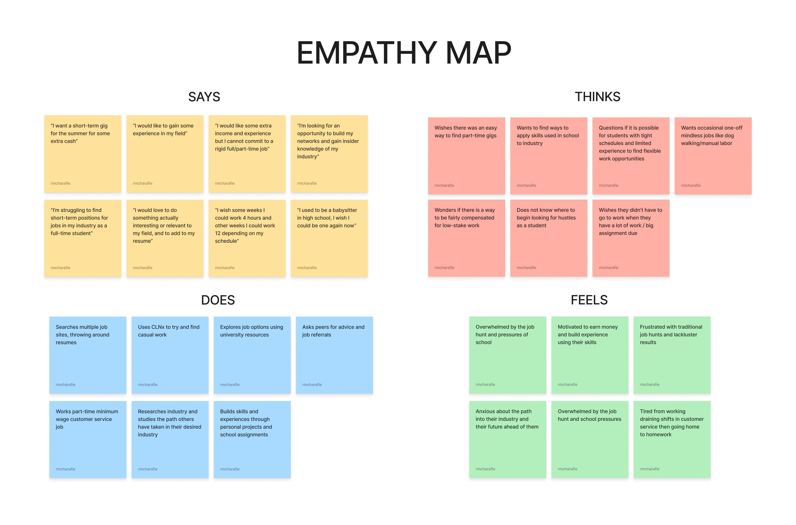
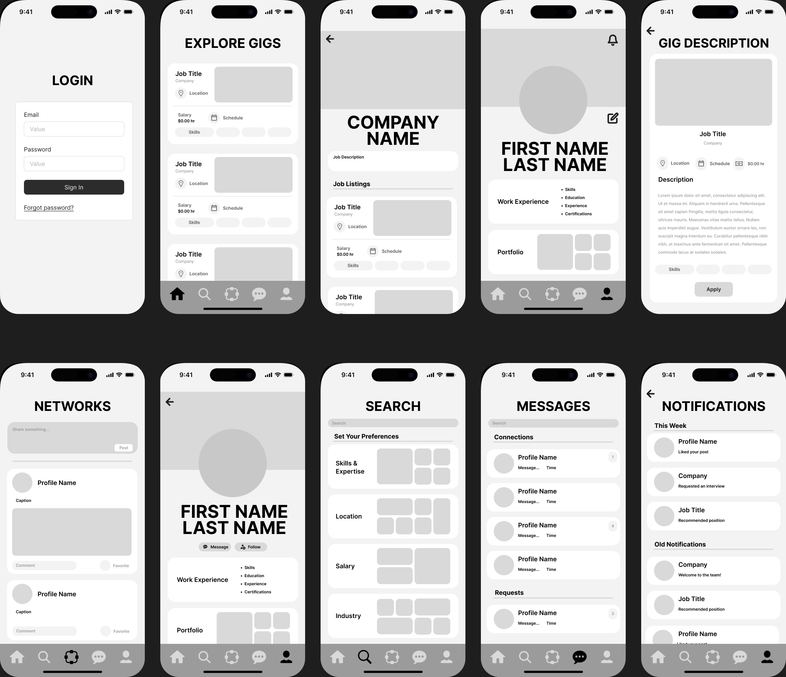
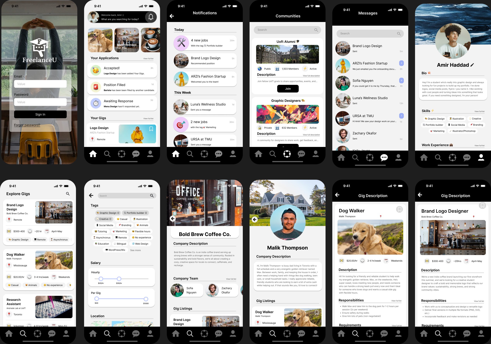

University students have valuable skills but often struggle to find flexible freelance opportunities that fit their academic schedules. Existing job boards are overwhelming, disconnected from students' needs, and fail to provide relevant gigs. FreelanceU was designed as a centralized, student-first platform that makes finding flexible, skill-aligned freelance gigs easy, safe, and empowering.
Research & Insights
We conducted detailed user research including interviews, empathy mapping, and early-stage usability testing with UofT students. Key findings revealed that:
Students needed short-term, flexible freelance gigs that fit around exams and assignments, not rigid part-time jobs.
Trust and secure payments were major concerns when accepting freelance gigs from unfamiliar clients.
Students wanted professional portfolios to showcase work, but existing platforms like LinkedIn felt intimidating or irrelevant.
Clients wanted easier access to a verified, reliable pool of student freelancers.


Designing FreelanceU
We developed a low-fidelity prototype addressing critical student and client needs. The initial design included:
Customizable student profiles with skills, education history, and portfolio uploads.
Verified client badges and an in-platform payment system for secure transactions.
Advanced job search with filters for gig duration, remote work, skill match, and pay scale.
Community networking spaces based on industry fields to foster career growth.
Low-Fidelity Usability Testing
We tested our early prototype with student freelancers, assigning them tasks such as finding and applying for a gig, viewing jobs posted by a specific company, and following a user profile. Through these tests, we uncovered major themes for improvement:
Search Bar Usage: Students instinctively used the search bar rather than browsing categories, prompting us to move search functionality onto the homepage in future designs.
Networking Misalignment: Our "Networks" feed-based design was confusing; users preferred industry-based group chats and alumni connection tools.
Job Tracking Demand: Students wanted to bookmark gigs and track their applications' status directly within the app.
Need for Focus: Users preferred a streamlined, job-first experience over a LinkedIn-style expanded platform.
These findings directly informed the next iteration of our prototype.
High-Fidelity Usability Testing & Iterations
In our second round of usability testing, we validated improvements and gathered deeper feedback. Key refinements based on testing included:
Redesigned dashboard highlighting new gigs, application tracking, and suggested opportunities.
Persistent search bar integrated into the homepage with added trending filters and search suggestions.
Introduction of bookmarking and tracking tabs for saved jobs and current applications.
"Communities" section replaced "Networks" with industry-specific discussion spaces and group chats.
Expanded profile fields for bios, education, skills, and previous work experience to present students more professionally.
We adopted a calming color scheme (cool blues, greys, white) with minimalistic emoji accents to make the platform welcoming and stress-free for young users navigating early professional opportunities.
Final High-Fidelity Prototype
Our final design showcases:
Streamlined gig search, secure application, and progress tracking workflows.
Clear onboarding pathways and intuitive UI for first-time freelancers.
Professional yet approachable student profiles that attract clients.
Strong future scalability, including potential real-time messaging and AI-based job matching algorithms.

Next Steps
Introduce onboarding tutorials with walkthroughs of major platform functions.
Implement real-time direct messaging between freelancers and clients for better communication.
Expand notifications to cover job closing alerts, interview invites, and profile views.
Develop AI-driven job recommendations tailored to student skills and interests.
Enhance accessibility options, including dark mode and screen reader compatibility.
What We Learned
Students prioritize flexibility, simplicity, and trust when seeking freelance gigs.
Search-first navigation is intuitive and must be made accessible from the homepage.
Networking should foster mentorship and skill-sharing rather than mimic social feeds.
Focused, purpose-driven design is more effective than adding unnecessary "nice-to-have" features.
Continuous, iterative testing with real users is critical for a platform’s success and adoption.
Conclusion
FreelanceU showcases the importance of truly user-centered design. Every element — from intuitive search to secure applications and authentic networking spaces — was shaped by student feedback. Through careful research, iterative testing, and design refinement, we built a platform uniquely suited to helping university students find meaningful freelance work, grow their skills, and build confidence for their professional futures.